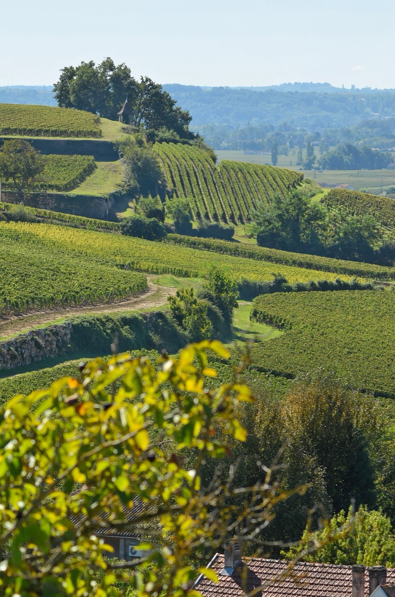
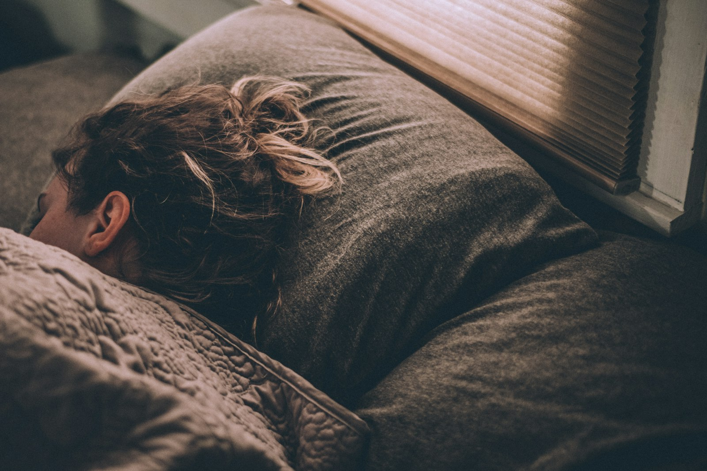
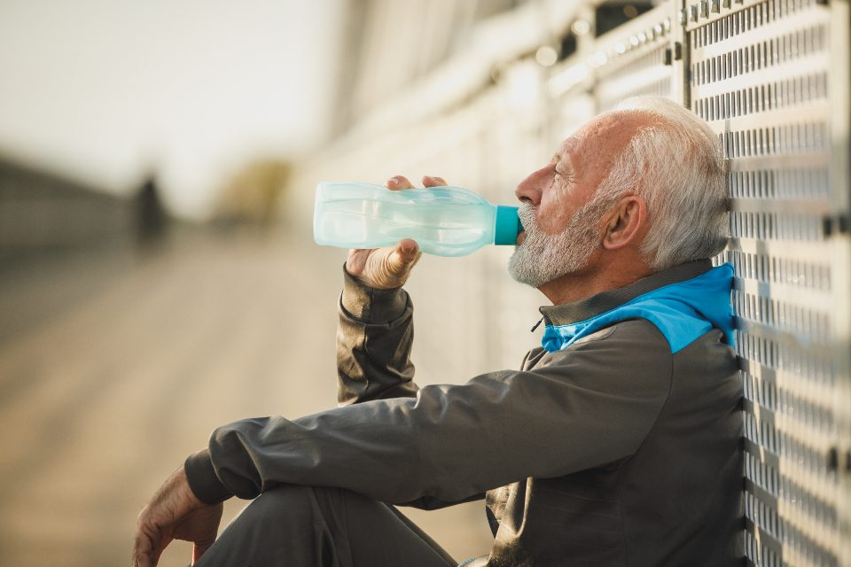
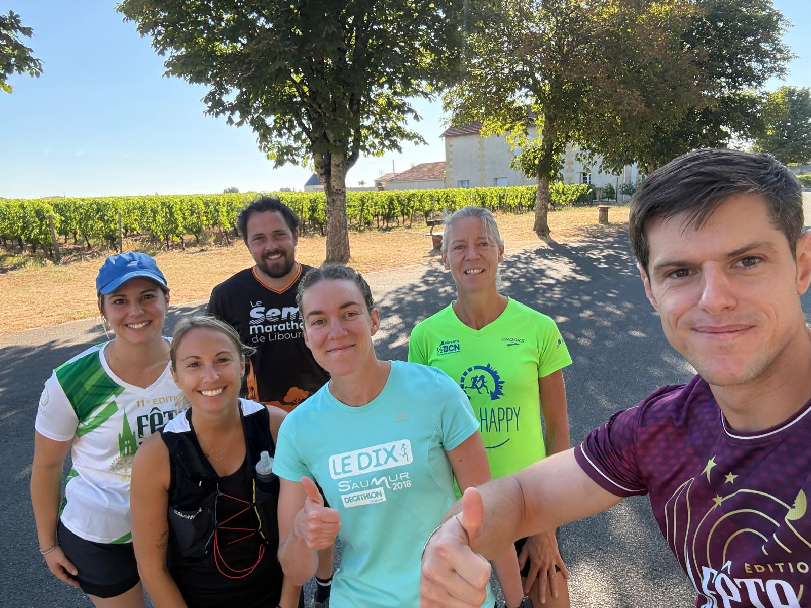

Octobre arrive, les matins fraîchissent, et avec eux revient la grande question de saison : le nez coule, la gorge gratte un peu, et la sortie du dimanche approche. On y va, ou on reste sous la couette ?
Il n'y a pas de réponse unique, mais il y a une règle simple, et une étude récente qui rappelle pourquoi elle compte, surtout pour les coureurs qui s'entraînent régulièrement.
Les coureurs tombent malades, eux aussi

Des chercheurs sud-africains ont suivi 152 traileurs amateurs (120 hommes et 32 femmes) pendant 30 semaines d'entraînement. Tous les quinze jours, chacun remplissait un questionnaire sur sa santé. Les résultats ont été publiés dans le Journal of Science and Medicine in Sport.
Sur la période, 52 % des coureurs ont été malades au moins une fois. Dans près de deux cas sur trois (64 %), c'étaient les voies respiratoires qui étaient touchées : rhume, gorge, bronches. Venaient ensuite les troubles digestifs (16 %).
Deux autres chiffres parlent directement à notre saison. Les maladies étaient 1,6 fois plus fréquentes en hiver qu'en été. Et les femmes en ont déclaré 1,5 fois plus que les hommes. Surtout, un coureur sur trois a perdu plus d'une semaine d'entraînement à cause d'un de ces épisodes.
Autrement dit : courir régulièrement ne rend pas invincible. Et la façon dont on gère les premiers symptômes peut faire la différence entre deux jours de pause et deux semaines d'arrêt.
La règle du cou
C'est le repère le plus utilisé par les médecins du sport, et il tient en une question : où sont vos symptômes ?
- Au-dessus du cou (nez qui coule, éternuements, léger mal de gorge) et vous ne vous sentez pas particulièrement fatigué : une sortie courte et tranquille est en général possible. Si vous vous sentez mieux après dix minutes, continuez doucement. Si vous vous sentez moins bien, rentrez.
- En dessous du cou (toux grasse, poitrine qui serre, courbatures, ventre en vrac) : on ne court pas. Le corps a déjà un travail à faire.
- De la fièvre : repos, sans discussion. La fièvre sollicite déjà le cœur et augmente le risque de déshydratation. Courir par-dessus n'a aucun intérêt et peut être dangereux.


Doucement, oui. Fort, non.
Même quand la règle du cou dit « c'est possible », tout est dans le dosage. Un effort modéré ne semble pas aggraver un simple rhume. En revanche, les séances longues ou intenses (fractionné, côtes, sortie longue) sont à mettre de côté tant que les symptômes sont là. Elles fatiguent un organisme déjà occupé à se défendre.
Concrètement, un jour de rhume, la bonne séance ressemble à une sortie lente de 20 à 30 minutes, ou à une marche active. Pas de chrono, pas d'objectif.
Et si vous courez en groupe, pensez aux autres : on évite de partager la gourde, on tousse dans son coude, et on reste un peu à l'écart au moment des étirements.
Reprendre sans rechuter

Après un vrai épisode (fièvre, grippe, bronchite), on attend que la fièvre ait disparu et que les courbatures soient parties avant de rechausser. Ensuite, on reprend plus bas qu'avant : sorties courtes et faciles pendant quelques jours, et on ne remet de l'intensité que quand les sensations sont revenues.
Un bon signal d'alerte : un essoufflement anormal ou un cœur qui s'emballe pour une allure habituellement facile. Dans ce cas, on lève le pied, et si cela persiste, on en parle à son médecin.
Passer l'automne sans trop tousser
Il n'existe pas de recette miracle, mais quelques habitudes aident clairement :
- Dormir assez, surtout les semaines chargées. C'est le premier allié de l'immunité, et la course aide justement à mieux dormir.
- Ne pas empiler les grosses séances juste avant et juste après une course. C'est dans ces périodes que la fatigue ouvre la porte aux virus.
- Manger varié, avec des fruits et légumes de saison, et assez pour couvrir l'entraînement.
- Se changer vite après la sortie. Rester en t-shirt mouillé sur le parking à discuter, c'est le grand classique d'octobre.
- Se laver les mains, tout simplement.

Manquer une sortie n'a jamais fait perdre sa forme à personne. Manquer trois semaines parce qu'on a voulu forcer, si. Au club, personne ne vous en voudra de rester au chaud un dimanche, et le groupe sera là la semaine suivante. Le programme des sorties est sur la page Entraînements.
Cet article donne des repères généraux et ne remplace pas l'avis d'un médecin. En cas de doute, de fièvre qui dure ou de gêne respiratoire, consultez.